Introduction
L’objectif de cet article n’est pas de vous donner des consignes de votes mais de vous sensibiliser sur la base d’un thème d’actualité : celui de la sobriété numérique. En tant qu’experts, nous avons évalué l’empreinte environnementale des sites web des 12 candidats à l’élection présidentielle 2022. Nous nous sommes basés sur la page d’accueil de chacun de ces sites. Pour rappel, nous avions déjà réalisé cet exercice en 2017.
Accès rapides
Classement de l’empreinte environnementale
Énergie consommée
Volume de données échangées
Tableau des résultats
Méthodologie
Si les sites web de campagnes sont éphémères, compte tenu du grand nombre d’internautes (et plus particulièrement de mobinautes), il est tout à fait intéressant de mesurer leurs impacts et consommations en énergie-ressources sur nos smartphones. Plus une URL est couramment consultée, plus réduire son impact numérique est essentiel. Les sites web des candidat.e.s à la présidentielle 2022 sont-ils écoconçus ? Répondent-ils tous à un numérique efficient et responsable ? Ont-ils évolué depuis 2017 ? Toutes les réponses dans cet article.
L’expertise de Greenspector
Nous avons déterminé cette empreinte en suivant notre méthodologie habituelle : chargement de la page d’accueil du site sur un smartphone (le scénario complet est décrit ci-dessous dans la partie méthodologie), mesure des consommations d’énergie, de données échangées et d’autres ressources, puis projection d’impact à partir de ces mesures. La projection d’impact est basée sur notre propre modèle, établi par notre équipe R&D. Elle tient compte des composantes nécessaires à la consultation du site (terminal, réseau, datacenter) et de l’ensemble des phases de cycle de vie pour les terminaux et datacenters. Les 3 impacts évalués sont : gaz à effet de serre, empreinte eau, utilisation des sols (plus de détails ci-dessous).
Et maintenant, place aux résultats !
Classement de l’empreinte environnementale des sites web des 12 candidat.e.s à la présidentielle 2022
Les 3 candidat.e.s dont le site web sont parmi les moins impactants sont : Nathalie Arthaud, Anne Hidalgo et Emmanuel Macron.
À l’inverse, les 3 candidat.e.s dont le site web sont parmi les plus impactants sont : Jean Lassalle, Marine Le Pen et Fabien Roussel.
Nous observons 6x plus d’impact par page entre le site le moins impactant et le site le plus impactant de ce classement.
La moyenne d’impact carbone de ces 12 sites web est de 0,57 gEqCO2 sur une minute soit l’équivalent de 5 mètres effectués en véhicule léger. 6 sites web se trouvent en dessous.
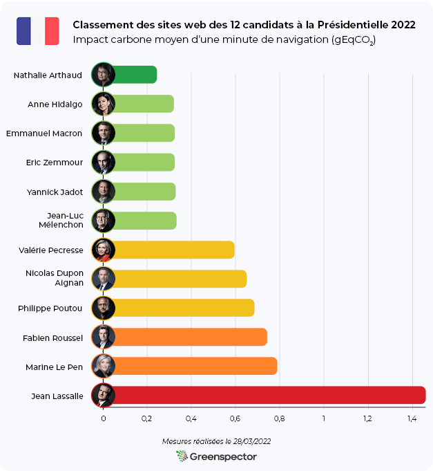
Si l’on projette l’impact carbone du meilleur site web de ce classement (celui de la candidate Nathalie Arthaud) pour 100 000 personnes naviguant 10 minutes sur ce même site, cet impact serait de 240 kg eqCO2. Soit l’équivalent de 2142 km effectués en véhicule léger.
À l’inverse, pour le site le moins bon de ce classement (celui du candidat Jean Lassalle), l’impact carbone serait de 1460 kg eqCO2 soit l’équivalent de 13 035 km effectués en véhicule léger. L’écart d’impact entre ces deux sites est de x6.
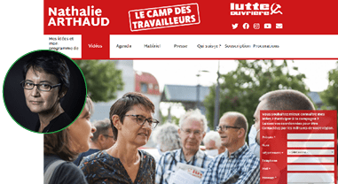
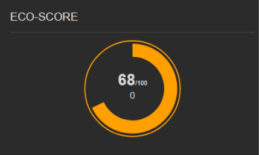
Le site de la candidate Nathalie Arthaud est le meilleur de ce classement. Avec un ecoscore Greenspector de 68/100.
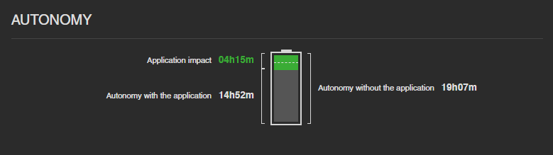
Une utilisation de ressources énergétiques qui maintient l’autonomie sur un appareil mobile à un bon niveau.
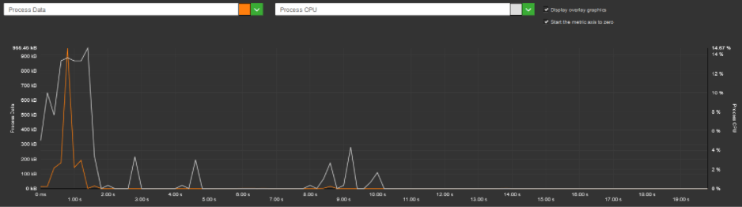
Un chargement rapide de la page et une interaction rapide avec les internautes. Quelques traitements légers dans la page peu gourmands en temps de traitement et en énergie.
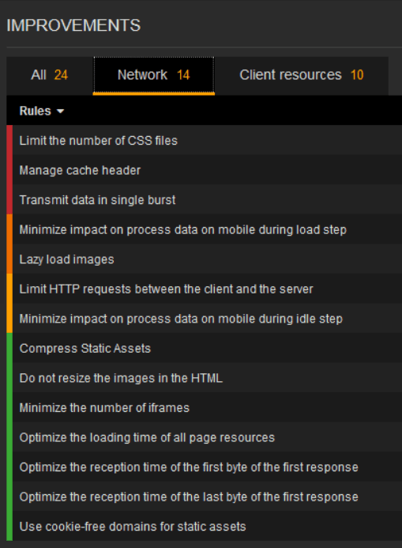
Des échanges réseaux plutôt maîtrisés mais perfectibles notamment sur la gestion du cache qui oblige l’utilisateur à recharger systématiquement une grande partie des éléments lors de sa prochaine visite sur la page.
Matomo a été préféré à Google Analytics, ce qui est un bon choix autant pour réduire l’impact environnemental que par respect pour la vie privée des internautes.
Points d’améliorations
- Le site est globalement sobre dans son contenu et son intégration même s’il reste de nombreuses possibilités d’amélioration. La page contient notamment de nombreuses erreurs d’accessibilité.
- L’intégration de FontAwesome alourdit considérablement la page en générant plusieurs requêtes, qui sont d’ailleurs parmi les rares requêtes de cette page vers des services externes. Cet ajout est d’autant plus discutable que cette police ne semble pas essentielle pour le site et peut représenter un risque vis-à-vis du RGPD. Le simple fait d’y trouver une alternative allégerait considérablement le site.
- Sur les pages comportant de la vidéo, des bonnes pratiques sont respectées : pas de préchargement ni de lancement automatique, pas d’intégration via Youtube. On note toutefois que l’intégration des vidéos génère plusieurs requêtes volumineuses et que le bandeau latéral des articles (sidebar.jpg) gagnerait à être optimisé (plus de 900 Ko à lui seul!).
- Le chargement différé (lazy-loading) des images réduirait également l’impact du site.
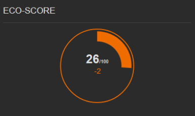
Le site du candidat Jean Lassalle est le moins bon de notre classement avec un écoscore Greenspector de 26/100.
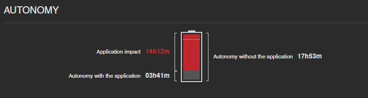
Une consommation forte de ressources (mémoire, CPU et énergie) sur toutes les étapes de chargement, lecture, scroll et mise en arrière-plan. Ceci est dû à des activités de calcul, d’affichage et d’usage de cellule radio pour de longues transmissions de données. Ne mettez pas en boucle ce scénario de test sur votre appareil mobile car il vous privera de votre autonomie après 3 H 41 d’usage !
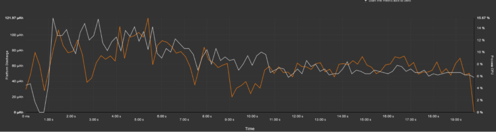
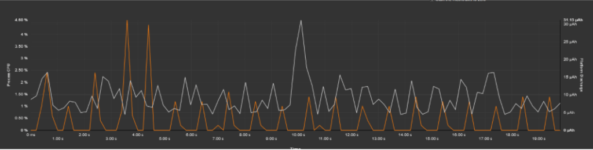
Les indicateurs CPU et énergie montrent le fort impact des animations, vidéo, cartographie et autres scripts intégrés dans la page.
Une consommation d’énergie très forte de la page en background met en évidence des traitement CPU qui se poursuivent en arrière-plan.
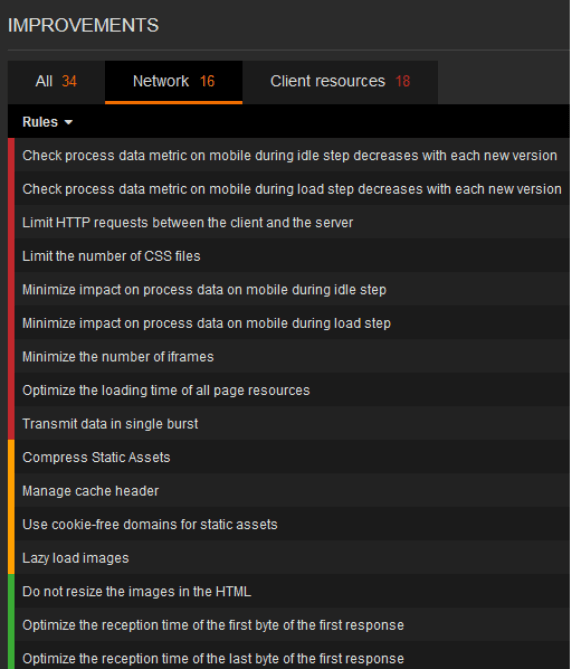
Beaucoup d’échanges réseaux avec 148 requêtes, 29 fichiers CSS et 8 iframes, et une gestion du cache partiellement mis en œuvre sur les contenus. Tout cela pour faire transiter sur le réseau 30 Mo en 1 minute !
Points d’améliorations :
- Le code (JS et CSS) devrait être optimisé avec parfois même des fichiers chargés en double. L’intégration directe d’une vidéo Youtube et d’un carte Google Maps engendrent de nombreux chargements de fichiers et augmentent considérablement l’impact de la page. De même pour l’intégration d’un fil Twitter.
- L’utilité fonctionnelle de certains composants est à vérifier, notamment l’intégration d’un agenda vide (L’encart « Les prochaines dates à ne pas rater » est vide d’évènements à venir).
- La page comporte plusieurs problèmes d’accessibilité, notamment l’intégration d’une vidéo en autoplay ainsi que des soucis de contraste de couleurs rendant certains textes difficilement lisibles.
- La page contient de nombreuses requêtes vers des services tiers (Google, Facebook, etc) dont une partie ne sont pas conformes au RGPD.
Zoom sur les indicateurs pris en compte dans l’évaluation de l’empreinte environnementale
Consommation d’énergie des sites web
Les 3 candidat.e.s dont le site web sont parmi les moins énergivores sont : Nathalie Arthaud, Anne Hidalgo et Yannick Jadot.
À l’inverse, les 3 candidat.e.s dont le site web sont parmi les plus énergivores sont : Jean Lassalle, Nicolas Dupont Aignan et Philippe Poutou.
Nous observons un écart de x4 entre le site le plus et moins énergivore de ce classement.
La moyenne de la consommation en énergie de ces 12 sites web est de 5,88 mAh, 8 sites web se trouvent en dessous.
Parmi les candidat.e.s déjà présent(e)s lors de l’Élection de 2017, toutes et tous ont su réduire la consommation d’énergie de leur site web (en moyenne de -20%), sauf pour le candidat Jean Lassalle dont la consommation énergie de son site web a fortement augmenté (x2.4).
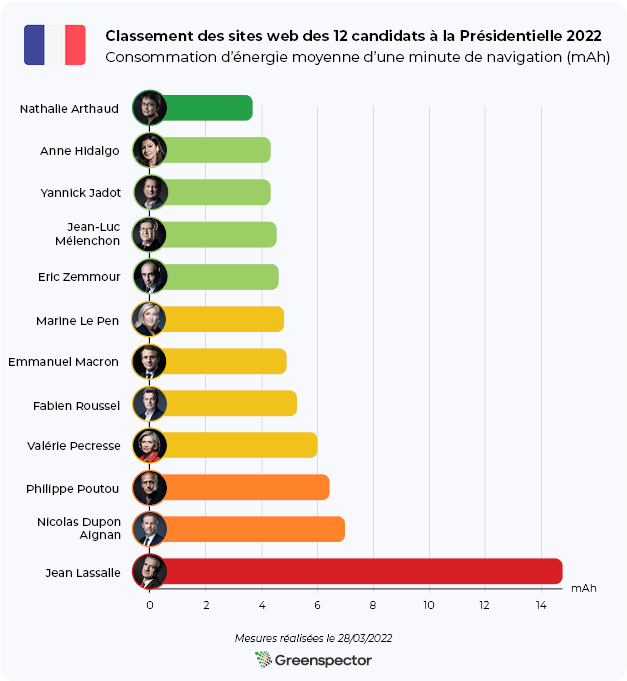
Volume de données échangées des sites web
Les 3 candidat.e.s dont le site web sont parmi les moins consommateurs en termes de données échangées sont : Nathalie Arthaud, Jean-Luc Mélenchon et Emmanuel Macron.
À l’inverse, les 3 candidat.e.s dont le site web sont parmi les plus consommateurs en termes de données échangées sont : Jean Lassalle, Marine Le Pen et Fabien Roussel.
Nous observons un écart x18 entre le site qui échange le moins de données et celui qui en échange le plus de ce classement.
La moyenne de données échangées de ces 12 sites web est de 9,25 Mo, 7 sites web se trouvent en dessous. Généralement, il est plutôt recommandé de garder la taille d’une page autour voire en-dessous de 1 Mo.
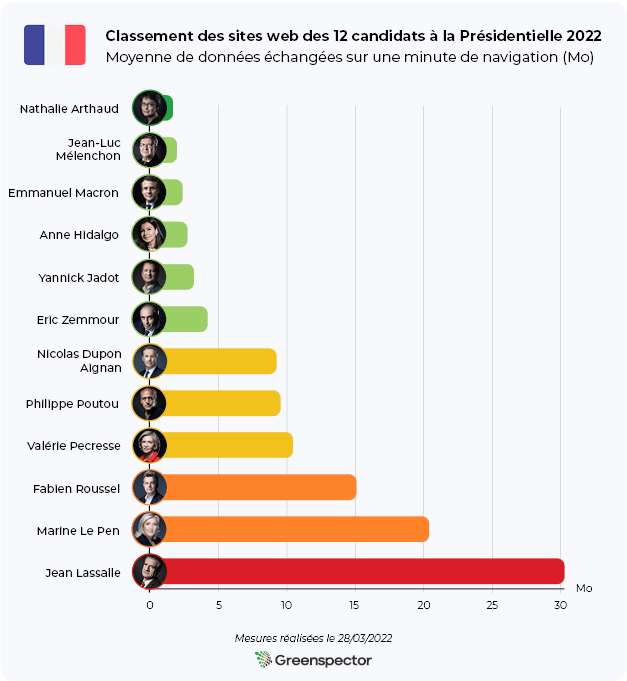
Pour ceux qui aiment les chiffres…
[table “candidats_web_2022” not found /]Méthodologie Greenspector
Pour chacun de ses sites web, mesurés sur un smartphone S7 (Android 8), les mesures ont été réalisées au travers de notre Greenspector Benchmark Runner, permettant la réalisation de tests automatisés.
Détail des scénarios :
– Chargement de l’application
– Inactivité site web en premier-plan
– Scroll
– Inactivité site web en arrière-plan
Chaque mesure est la moyenne de 5 mesures homogènes (avec un écart-type faible). Les consommations mesurées sur le smartphone donné selon un réseau de type wifi peuvent être différentes sur un PC portable avec un réseau filaire par exemple. Pour chacune des itérations, le cache est préalablement vidé.
Côté projection de l’empreinte, les paramètres pris en compte sont :
- Ratio de visualisation : 100% Smartphone
- Ratio de visualisation : 100% France
- Localisation des serveurs : 100% Monde
Découvrez comment Greenspector évalue l’empreinte environnementale d’un service numérique.
Crédit photo: AFP